Estado atual
Cada item tem um estado: planejado → em desenvolvimento → implementado → testado → validado → aprovado artisticamente. Só o usuário aprova arte.
| Capacidade | Estado | Evidência |
|---|---|---|
| Pipeline ficha → Blender → sprites → Godot | testado | Gates G1, G7 e G8 passam; o Godot confere 192 quadros em 24 clips |
| Rig humanoide chibi, idle, walk e run | testado | Sonda de chão e túnica em todos os quadros; pé deslizando ≤ 0,00006 H/s |
| Personagem mestre: Aprendiz | aguarda aprovação | G9 em revisão; a reprovação anterior fica no histórico |
Acabamento suave pindorama_friendly_smooth_v1 (principal) | implementado e testado | Passes em 3× com antialiasing real, luz de borda, textura contínua; transparência 207 de 216 |
| Acabamento pixel art (opcional) | testado | Transparência 216 de 216, alpha binário |
| Atlas recortado para o Godot | testado | VRAM por personagem (192 px): 27,9 → 10,6 MiB; Godot confere pixel a pixel |
| Personalização modular | testado | 5 variações de um campo cada; só mudam as peças trocadas |
| Clips de ataque, magia, defesa e morte; perfis por arma | planejado | Bloqueado até a aprovação do mestre |
| Criaturas, natureza, objetos, construções, ambientes | visão / planejado | Roadmap; nenhum código ainda |
Galeria
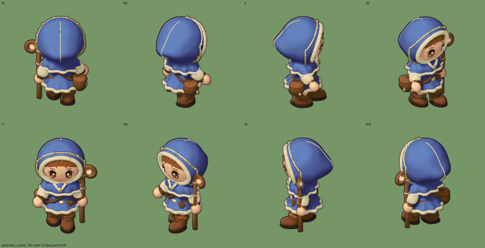
Atual: Aprendiz detalhado no acabamento suave, caminhada nas 8 direções, 192 px, 12 fps.
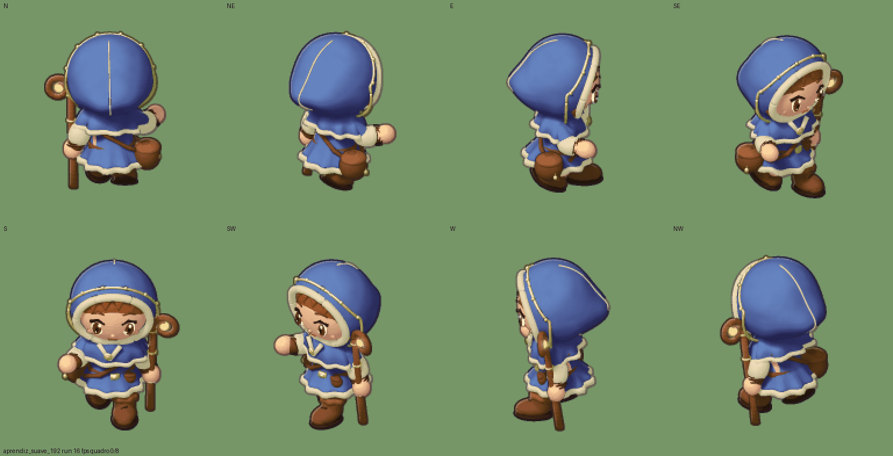
Corrida, 16 fps.
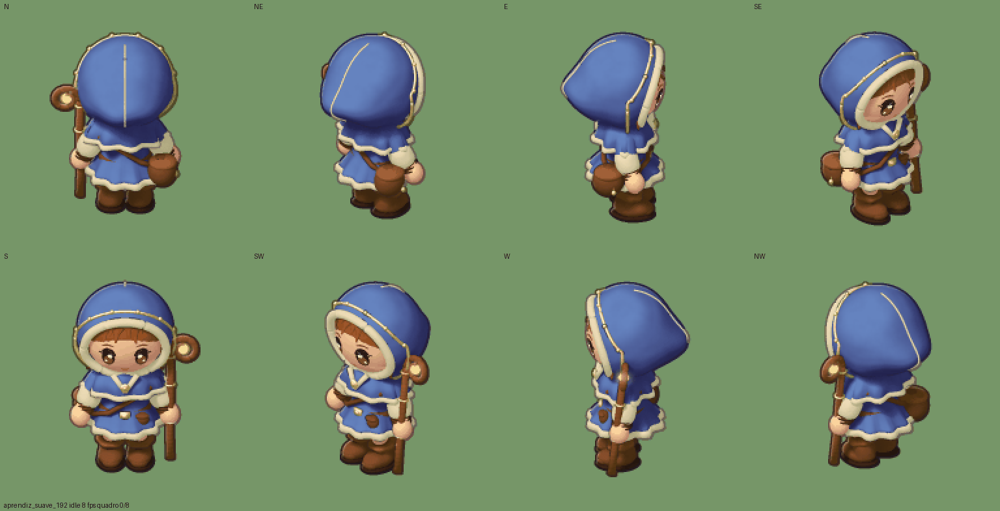
Idle, 8 fps.
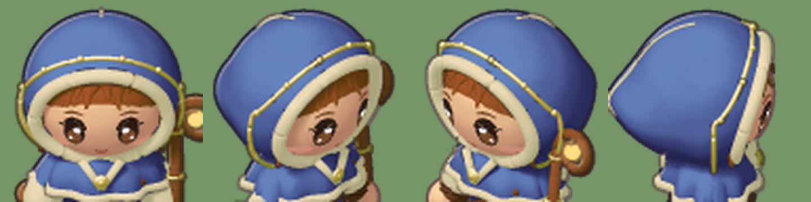
Evolução 3: o rosto virou um decalque vetorial procedural preso à cabeça. Antes, era geometria 3D fina que brigava com sombra e franja (antes).

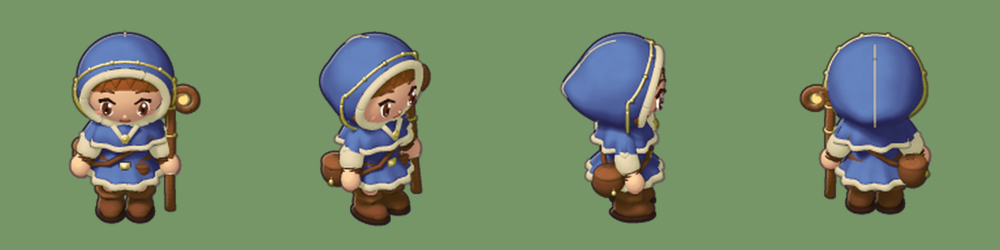
Evolução 2: faixa bordada dourada com contas, luz de borda no lado iluminado e textura contínua no tecido.
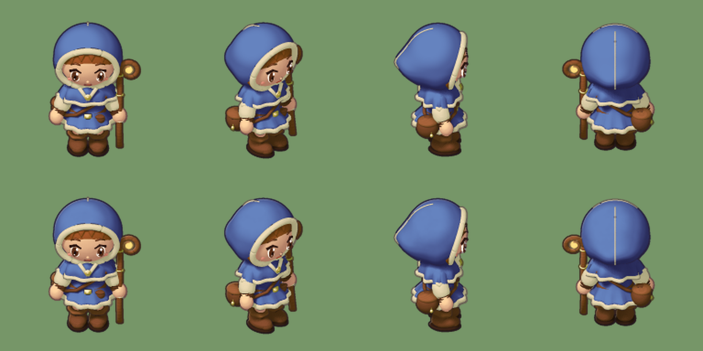
Experimento E1/E2: em cima, antes; embaixo, com luz de borda e ruído de baixa frequência (efeito sutil).
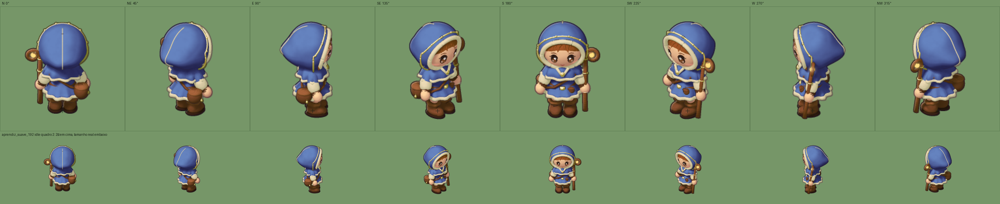
As oito direções com a mesma escala, enquadramento, pivô e fundo; embaixo, em tamanho real.
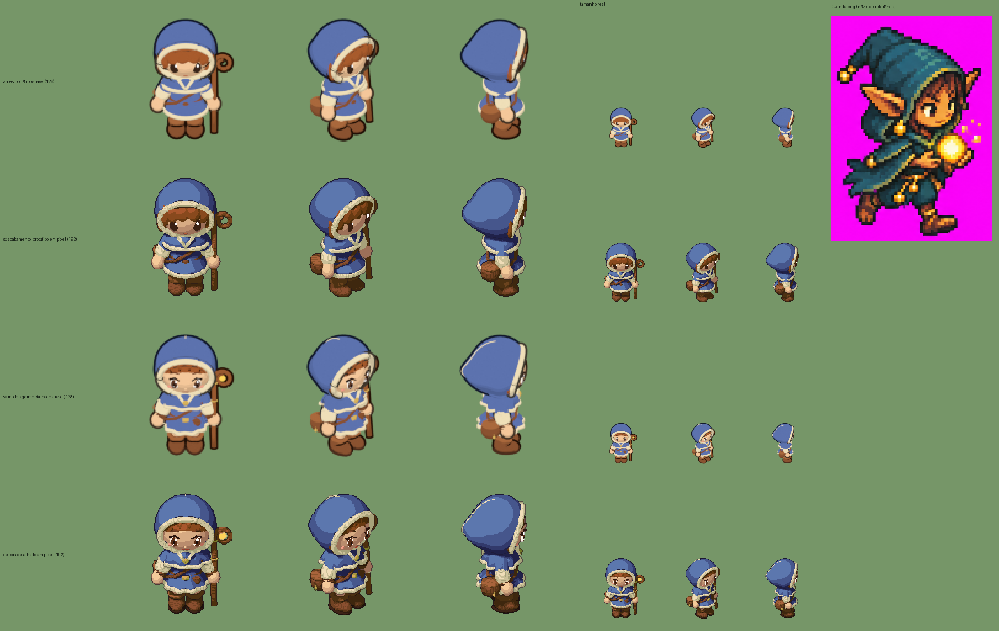
Antes e depois: o protótipo, só o acabamento, só a modelagem e os dois juntos, com a Duende como referência de nível.
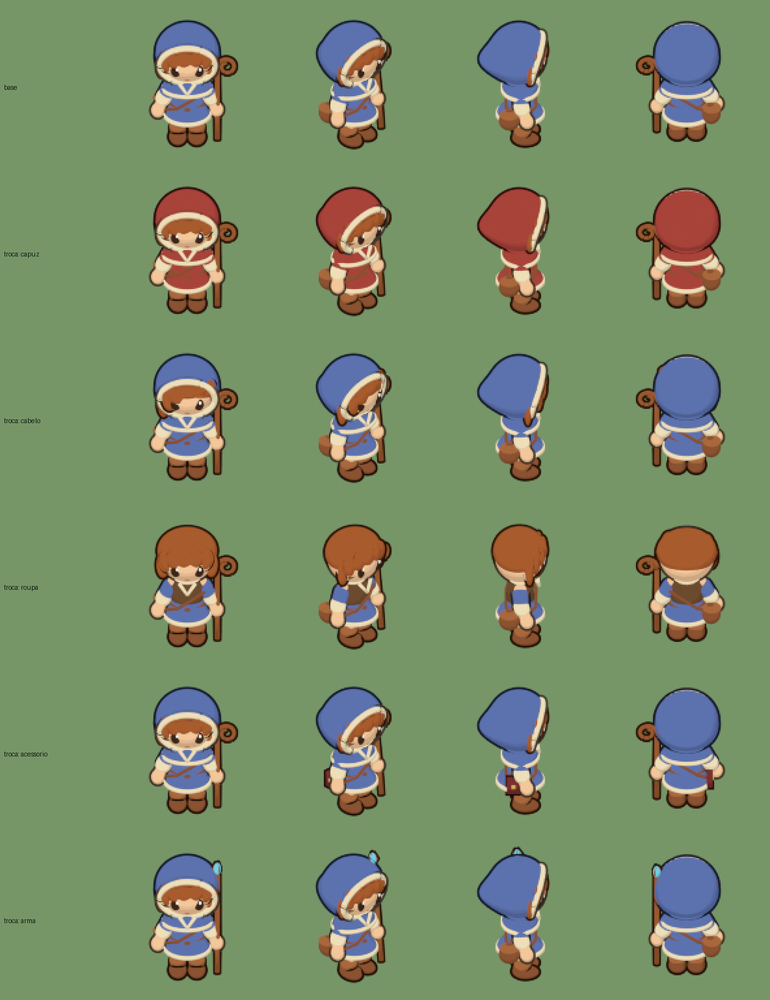
Personalização modular: cor do capuz, cabelo, roupa, acessório e arma.
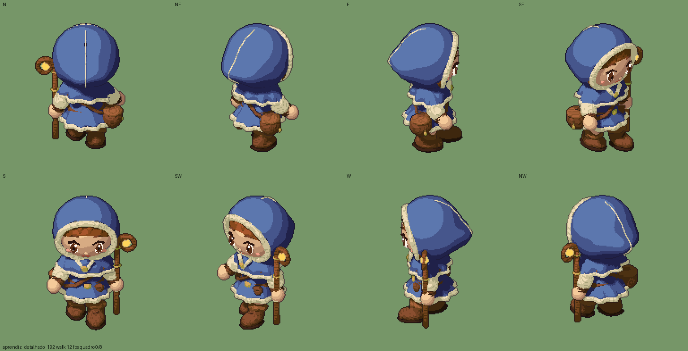
Perfil opcional em pixel art.
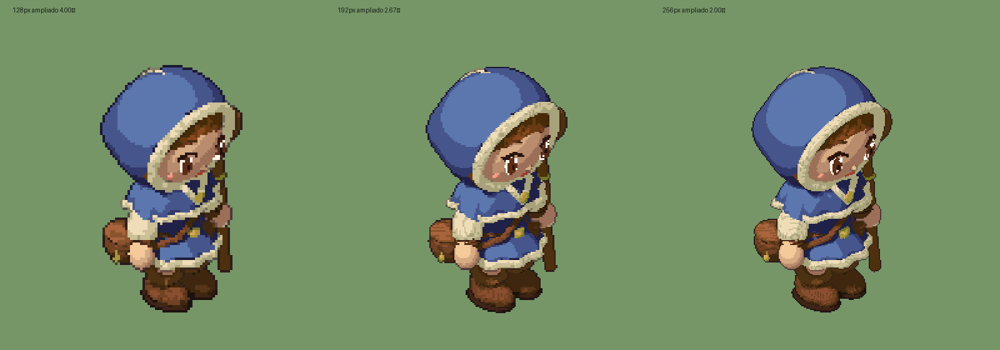
Teste de resolução 128, 192 e 256 na mesma altura de tela.
Evolução
- 2026-11-06: a cadeia técnica funciona até o Godot; o primeiro visual é reprovado (G9).
- 2026-11-06: protótipos do mestre (rotas A, B e C) com malha de IA local; a forma base é aprovada, a pintura é reprovada.
- 2026-11-07: virada para o chibi do Mago, conforme a direção de arte do Pindorama.
- 2026-11-07: auditoria do mestre; a sonda de pose acha e corrige botas e cajado no chão e coxa saindo da túnica.
- 2026-11-07: modelo detalhado e pixel art nativo por passes.
- 2026-11-07: Master Prompt V2. A direção principal vira ilustração suave; o acabamento
smoothreusa os passes. - 2026-11-07: repositório público e este site; pesquisa de 14 repositórios de geração procedural.
- 2026-11-07: evolução 2 do acabamento suave: luz de borda, textura contínua e faixa bordada no capuz.
- 2026-11-07: evolução 3: rosto como decalque vetorial procedural (feedback do usuário), mechas por curva e
seedna ficha. - 2026-11-07: atlas recortado: −62% de memória de vídeo por personagem.
Arquitetura
A direção de arte é dado versionado (ArtProfile): luz, sombra, papéis de material (pele, tecido, couro, madeira, metal, gema), contorno e resolução. Os geradores consomem o perfil, e o cache por hash de conteúdo evita retrabalho.
Pesquisa técnica
Estudo de projetos abertos de geração procedural, para aproveitar técnicas, não estilos: catálogo, comparação, descobertas, mapa de oportunidades, recomendações e decisões.
Decisões e conflitos
Registro de decisões · Matriz de aderência ao Procedural Art Engine · Status detalhado · Validação